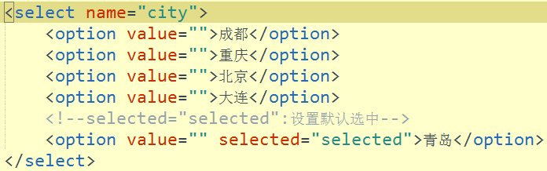

一、表单标签 form
提交表单中收集的信息
- action属性：设置提交信息的位置
- method属性：提交方式 - post/get
input标签（单标签） ---text（文本输入框）
- 可用在表单标签，也可单独使用
- type属性：text-普通的文本输入框
- name属性：必须设置(用于提交信息)
- value属性：标签内容
- placeholder属性：占位符（提示信息）
- maxlength:输入框最多能输入的字符个数
- readonly:readonly:输入框只读，不能往里面写入内容
input标签 - 密码输入框
- type属性：password --输入的值是密文显示
input标签 - 单选按钮
- type属性：radio
- name：同一类型对应的name值必须一样
- value：设置选中按钮提交的值
- checked：设置为checked，让按钮默认处于选中状态
- disabled="disabled"让按钮不能点击
input标签 - 多选按钮
- type属性：CheckBox
- name：同一类型对应的name值必须一样
- value：设置选中按钮提交的值
- checked：设置为checked，让按钮默认处于选中状态
- disabled="disabled"让按钮不能点击
input标签 - 重置按钮
让当前所在的form中的所有表单相关标签对应的值，回到最初的状态
- type属性：reset
input标签 - 文件选择器
二、下拉菜单和多行文本域
1、下拉菜单 select_option
位于 form 表单外的下拉列表（但仍然属于 form 表单的一部分）

2、多行文本域（多行文本输入框）textarea
<textarea name="" rows="5" cols="10" placeholder="输入意见" maxlength="200"></textarea>
rows 行; cols 列
三、空白标签
html中标签分为两大类：
块级标签：一行只能有一个（不管标签的宽度是多大）
- h1 - h6,p, hr， 列表相关的标签，table,form
行内标签：一行可以有多个
- a，img,input,下拉列表（select）,textarea,span
div标签，是空白标签，没有任何特殊的意义（无语义标签）,span也是
四、认识CSS
1、什么是CSS
CSS是web标准中的表现标准，用来设置网页上的标签的样式（长什么样、在哪）
CSS代码/CSS文件，我们叫样式表。
目前我们使用的是CSS3
2、写在哪儿
内联样式表：将css代码写在标签的 style属性中
内部样式表：写在head标签中的style标签的内容中
外部样式表：写在一个css文件中，通过head中的link标签来关联
优先级: 内联的优先级最高；内部和外部没有绝对优先，主要看同一个属性谁最后赋值，谁就有效
3.怎么写(CSS语法)
选择器{属性:属性值; 属性：属性值;}
选择器： 用来选中需要设置样式的标签
属性：css属性（css2中的属性有两百多个）
属性值：如果属性值是数字，表示的是大小要在后面加px
注意：每个属性之间要使用分号隔开，否则属性无效
补充属性：color：设置字体颜色 background-color:设置背景颜色 width：标签的宽度
height:标签的高度
五、CSS选择器
0、元素选择器（标签选择器）：标签名
选中所有的标签名对应的标签
1、id选择器：#ID属性值
每个标签都有一个ID属性，整个html中，id的值必须唯一
2、class选择器：.class属性值
每个标签都有一个class属性，
3、通配符： *
选中所有的标签
4、层级选择器：选择器1 选择器2.。。。
5、群组选择器：选择器1，选择器，。。。
补充：
CSS中的颜色值：
1、颜色英语单词
2、16进制的颜色值 0-255 ---00-ff（#ff0000 --表示红色）
3、rgb值：rgb（红，绿，蓝） rgba值：rgba(红，绿，蓝，透明度（0-1）)
六、伪类选择器
伪类选择器:选择器:状态
link:超链接的初始状态 ---一次都没有访问成功的时候的状态
visited:超链接访问后的状态
hover:鼠标悬停在标签上对应的状态
active:鼠标按住的状态
给同一个标签通过伪类选择器给不同状态设置不同的样式的时候，要遵守爱恨原则（先爱才能恨）
LoVe HAte （先link,再visited,再hover，最后active）